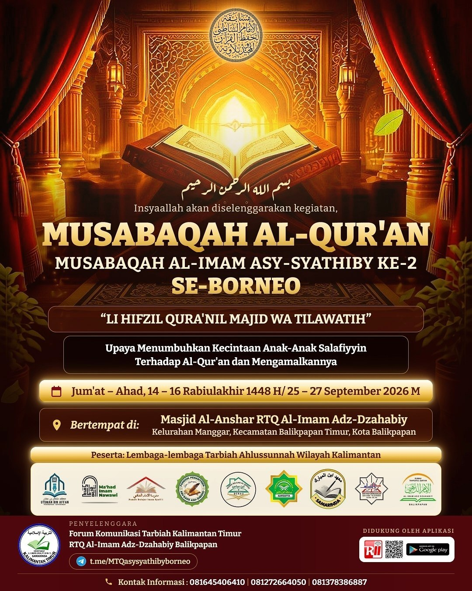
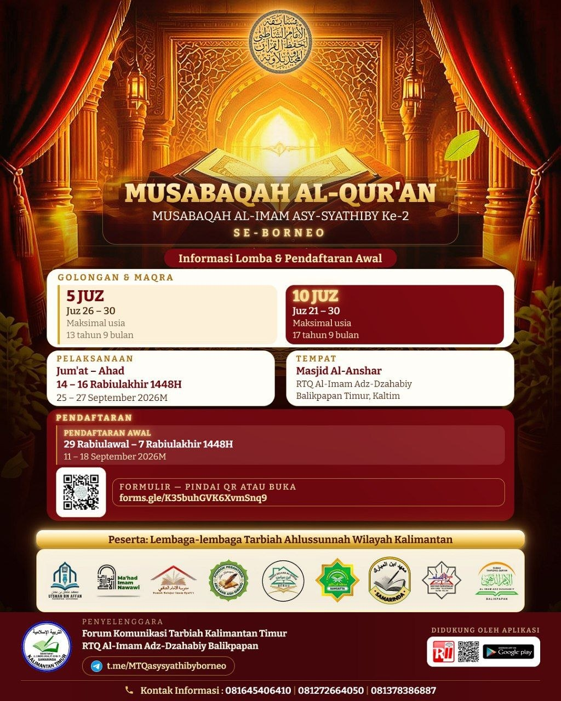
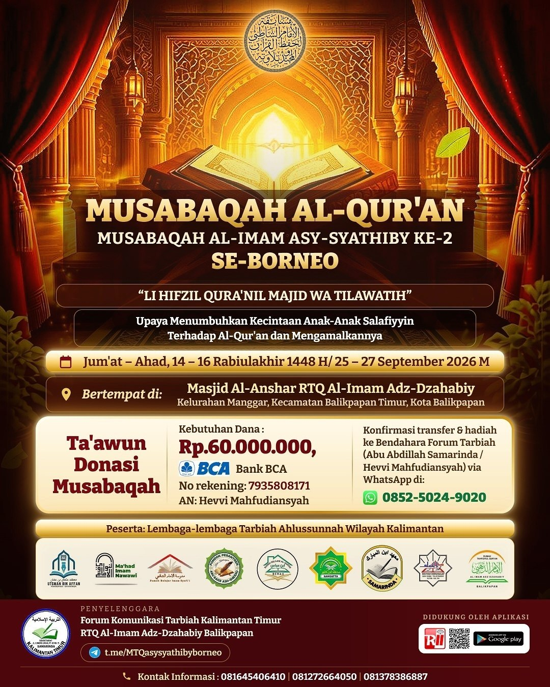

Insyaallah dilaksanakan pada 14–16 Rabiul Akhir 1448 H / 25–27 September 2026 di Masjid Al-Anshar RTQ Al-Imam Adz-Dzahabiy, Balikpapan.
Insyaallah, Musabaqah Al-Qur'an Al-Imam Asy-Syathiby ke-2 Se-Borneo akan segera dilaksanakan di Masjid Al-Anshar RTQ Al-Imam Adz-Dzahabiy, Balikpapan.

Kegiatan ini mengangkat tema “Li Hifzil Qur'anil Majid wa Tilawatih”, sebagai upaya menumbuhkan kecintaan anak-anak kaum muslimin terhadap Al-Qur'an dan mengamalkannya.
Musabaqah ini membuka kategori Golongan dan Maqra 5 Juz serta 10 Juz.

Dalam rangka mendukung kelancaran penyelenggaraan Musabaqah Al-Qur'an Al-Imam Asy-Syathiby ke-2 Se-Borneo, panitia juga membuka kesempatan bagi kaum muslimin untuk turut berpartisipasi melalui ta'awun dan donasi.
Adapun kebutuhan dana penyelenggaraan yang tercantum dalam informasi kegiatan adalah sebesar Rp60.000.000,-.
Bagi yang ingin berpartisipasi dalam mendukung kegiatan ini, donasi dapat disalurkan melalui:
Untuk konfirmasi transfer dan informasi lebih lanjut, dapat menghubungi bendahara Forum Tarbiah melalui WhatsApp: 0852-5024-9020.
